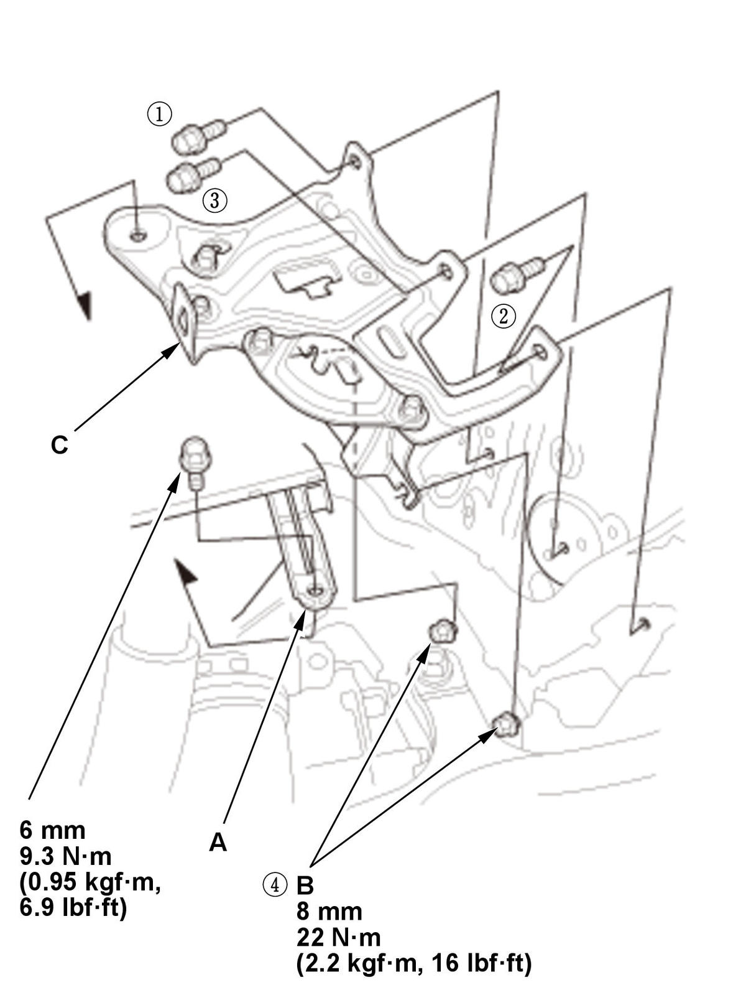

Removal and Installation
- Engine Undercover Plate - Remove
- Air Cleaner - Remove
- 12 Volt Battery - Remove
- 12 Volt Battery Base - RemoveFig 1: Exploded View Of 12 Volt Battery Base Replacement Components And Bolts With Tightening Sequence And Torque Specifications (K20C2)

Courtesy of HONDA, U.S.A., INC.1. Remove the harness holder (A). 2. Loosen the bolts (B).
3. Remove the 12 volt battery base (C).
NOTE: When installing the 12 volt battery base, tighten the mounting bolts in the numbered sequence shown.
- Harness Holder and Harness Clamp - Remove
1. Remove the harness holder (A). 2. CVT: Remove the harness clamp (B).
- PCM - Remove
- Transmission - Support
1. Lift and support the transmission with a jack and a wood block under the transmission. - Transmission Mount - Remove
NOTE: For (M/T), do not remove the bolt (C) from the transmission mount. If the bolt is removed, the transmission mount must be replaced as an assembly.
M/TCVT
1. Remove the ground cable (A). 2. Remove the transmission mount (B).
- All Removed Parts - Install
1. Install the parts in the reverse order of removal.
NOTE: Do the mounts tightening procedure before tightening all of the mounts' bolts and nuts.